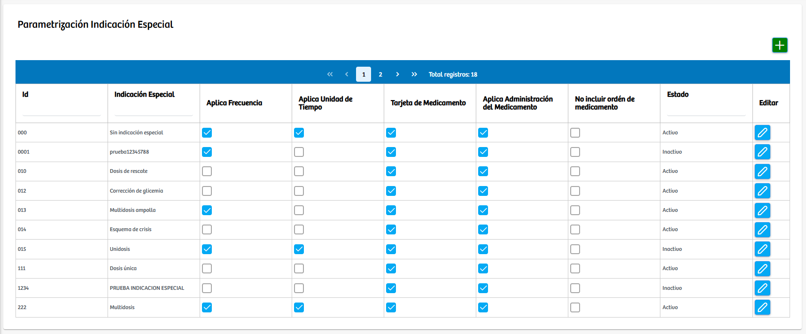
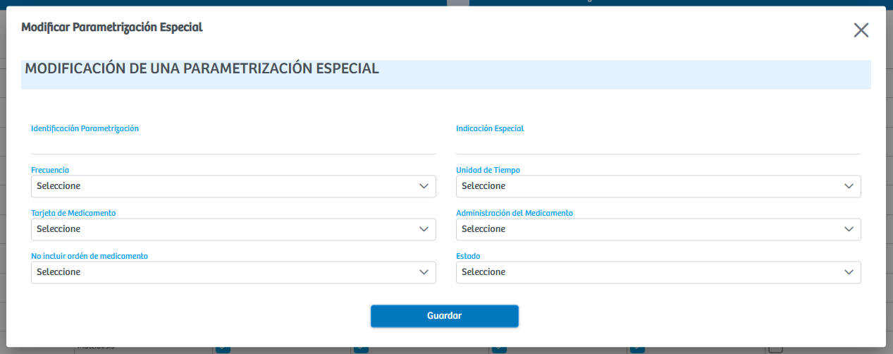

Modulos Sas-Web
Funcionalidades
Parametrizar Indicacion Especial
El módulo Parametrización de Indicaciones Especiales permite administrar y configurar las diferentes indicaciones especiales que serán utilizadas posteriormente en distintos formularios del sistema hospitalario dentro de SASWEB. Su objetivo es centralizar la creación y control de estas indicaciones para garantizar coherencia, orden y estandarización en otros procesos clínicos o administrativos donde se requieran.
En esta vista tenemos la tabla donde se guardan los registros de las indicaciones, alli mismo se podran editar. Arriba de esto se encuentra un boton "+" que es el que abre un modal con el formulario donde se pedira la informacion para crear una indicacion especial, aparte a esto se nos preguntara en que tipo de formulario va a salir y luego de esto podremos guardarla.
